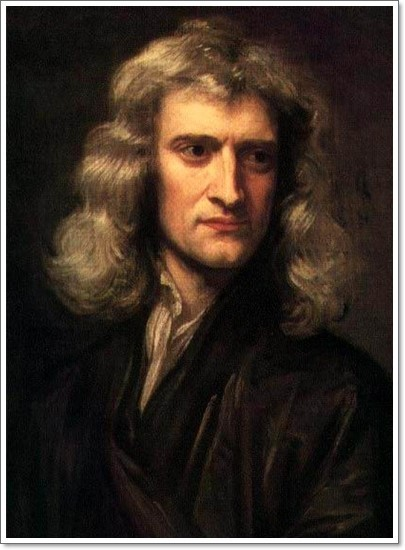

과학의 역사를 바꾼 과학자들 [1]
아이작 뉴턴(1643년 1월 4일~1727년 3월 31일)
아이작 뉴턴 경(영어: Sir Isaac Newton, 그레고리력 1643년 1월 4일~1727년 3월 31일, 율리우스력 1642년 12월 25일~1727년 3월 20일)은 잉글랜드의 수학자, 물리학자이다. 그의 뉴턴 역학으로 인류사학계와 대중 양측에서 인류 역사상 가장 영향력 있는 사람 가운데 1명으로 꼽힌다.
아이작 뉴턴의 업적
미적분학에 기여
적분은 고대에 무한대(無限大), 무한소(無限小), 극한(極限)을 생각하여 원의 넓이 구의 부피 등을 계산하는 구분 구적법으로 알려져 있었다. 대표적으로 카르타고의 수학자 아르키메데스의 저작이 있다. 14세기 인도 수학자의 저작에는 삼각함수의 테일러 급수가 완전한 형태로 등장하며, 함수의 미분이 등장한다. 프랑스의 수학자 피에르 드 페르마는 무한소를 다루며 함수를 미분하여 극대와 극소를 구하는 방법을 창안하였다. 미분과 적분을 한데 묶어주는 핵심적 정리인 미적분학의 기본정리는 뉴턴이 활동하기 이전에 증명되지 않은 채 알려져 있었고, 아일랜드 수학자 제임스 그레고리(James Gregory, 1638–1675)가 처음 증명을 출판하였다. 영국 수학자이자 뉴턴이 다니던 케임브리지 수학과 교수인 아이작 베로우(Isaac Barrow, 1630–1677)도 증명을 출판하였다.
뉴턴은 미적분학을 더욱 발전시키고(라이프니츠와 겹치는 부분이 많고, 이는 수학사에서 심심찮게 있는 일이다.), 함수의 근을 구할 때 미분을 해서 접선을 반복해서 그어 근에 수렴하게 하는 방법인 Newton's method 같은 것을 만들었다.
뉴턴 물체의 운동에관한 3법칙
뉴턴의 운동법칙(Newton의運動法則)은 물리학에서 물체의 운동에 관한 역학적 기본 법칙이다. 일반적으로 고전 역학의 기초인 뉴턴의 운동의 세 가지 법칙을 이르는데, 제1법칙은 관성의 법칙이고 제2법칙은 가속도의 법칙이며 제3법칙은 작용 반작용의 법칙이다.
- 어떤 물체(질량)에 외부로부터 힘이 작용되지 않으면 그 물체는 원래의 운동상태를 지속한다. 이것을 "관성의 법칙" 라고 한다.
- 물체에 힘을 작용하면 그 물체에 가속도가 붙게 되는데, 그 가속도의 크기는 "가속도의 작용하는 힘의 크기에 비례"하고, 그 물체의 질량에 반비례한다.
- 어떤물체에 작용하는 힘에는 그와 크기가 같고, 방향이 반대인 힘인 "반작용"이 작용한다(작용 반작용의 법칙).
중력의 발견
뉴턴의 과학적 발견은 정밀하며 중력의 힘을 수학적 물리량으로 발견한 것이다. 그의 시대에 그는 중력의 역제곱 법칙을 밝힌것으로 세상에 널리 알려지게 되었다. 중력의 역제곱 법칙은 두 물체 사이의 중력 인력은 힘을 두 물체 사이의 거리의 제곱으로 나눈 값에 따라 다르다. 사과가 떨어지게 하는 그 힘이 달을 계속 그 접선 방향으로부터 지구를 향해 떨어지도록 하는것이 분명하다. 갈릴레오의 책을 읽고 자신의 실험들을 수행하면서 뉴턴은 지표면에서의 중력의 힘이 사과를 지면으로 끌어당기는 힘이라는 것을 알았다. 초기에 그의 책 1권에서, 뉴턴은 중력의 개념을 공식화 했다. 그리고 나서 그는 어떻게 달을 이용하여 중력을 연구할수 있는지 설명했다. 만약 이 힘이 매우 작다면 달을 직선으로부터 벗어나게 하는데 충분하지 않을 것이다. 만약 너무 세다면 달의 경로를 너무 많이 휘게 하여 달이 자신의 궤도로 부터 지구로 끌려오게 될 것이다. 결국 그는 만류인력의 법칙을 설명했다. 왜냐하면 중력은 물체가 무겁든, 가볍든 크든, 작든 모든 낙하 하는 물체를 똑같이 가속시키기 때문이다. 뉴턴은 수학적으로 증명된 전제들을 가지고 천체현상으로부터 물체를 태양이나 몇몇 행성으로 향하게 하는 중력을 유도해 낸다. 뉴턴은 프린키피아 3권에서 자연 철학의 두 개의 주류의 통합을 달성했다.
광학
뉴턴은 프리즘을 연구했었는데, 프리즘으로 하는 초기 실험에서 뉴턴은 다른 색들은 꺾이거나 다른 각도로 굴절된다는 "굴절성"을 가지고 있다는 것을 보여주었다. 프리즘과 벽 사이에 바늘 구멍이 있는 다른 카드를 놓고 완전 적색 또는 청색의 광선이 분리되어 두 번째 프리즘을 통과하도록 하였다. 두 번째 프리즘은 각 색깔의 광선을 다시 굴절시켜 다른 색을 생성하지 않는다. 그는 청색 빛이 적색 빛보다 더 굴절된다는 것을 발견했다. 이 실험은 프리즘이 색을 생성하지 않는다는 것을 보여주었다. 또한 뉴턴은 "빛은 다른 굴절성의 광선들의 집합이다"라고 정리했다. 뉴턴은 새로운 빛과 색의 이론을 증명하기 위해 그는 두개 더 독창적인 실험들을 고안해냈다. 첫번째는 프리즘에 의해 생성되는 스펙트럼의 경로에 렌즈를 놓는 것이다. 렌즈를 이용해 다른 색 광선들을 합성시키면 원래의 흰색 빛으로 복원시킬 수 있는 것이다. 마지막으로 그는 톱니바퀴를 렌즈와 벽 사이에 놓고, 그 톱니가 렌즈로부터 나오는 다른 색 빛의 광선들이 초점에 도달하기 전에 방해하도록 했다. 결과는 벽에 있는 점은 흰 빛이 차단되면서 통과되는 다른 색 광선들에 따라서 변하였다.

출처: 위키피디아(뉴턴에 대해 더 알아보기)
홈으로 돌아가기